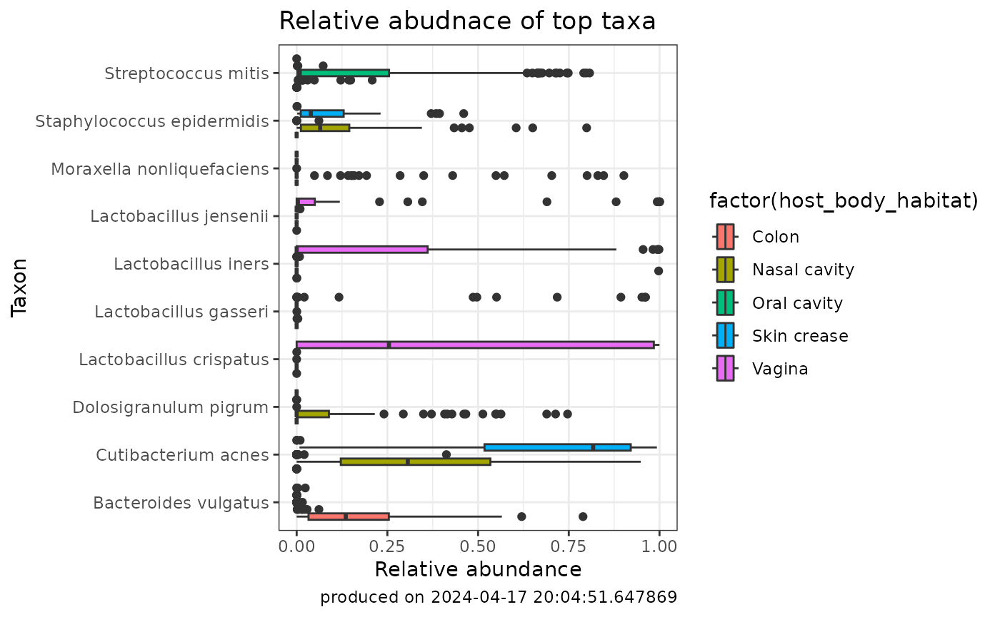

library(MicrobiomeDB, quietly = TRUE)
#> Warning: replacing previous import 'S4Arrays::makeNindexFromArrayViewport' by
#> 'DelayedArray::makeNindexFromArrayViewport' when loading 'SummarizedExperiment'
library(tidyverse, quietly = TRUE)
#> ── Attaching core tidyverse packages ──────────────────────── tidyverse 2.0.0 ──
#> ✔ dplyr 1.1.4 ✔ readr 2.1.5
#> ✔ forcats 1.0.0 ✔ stringr 1.5.1
#> ✔ ggplot2 3.5.1 ✔ tibble 3.2.1
#> ✔ lubridate 1.9.3 ✔ tidyr 1.3.1
#> ✔ purrr 1.0.2
#> ── Conflicts ────────────────────────────────────────── tidyverse_conflicts() ──
#> ✖ dplyr::filter() masks stats::filter()
#> ✖ dplyr::lag() masks stats::lag()
#> ℹ Use the conflicted package (<http://conflicted.r-lib.org/>) to force all conflicts to become errorsWhat are Relative Abundances
Relative abundances refer to the proportion or percentage of each taxonomic group or microbial species within a given sample or ecosystem. It quantifies the contribution of each taxon to the overall microbial community, providing insights into the distribution and dominance of different organisms. Relative abundances are typically determined through techniques like amplicon sequencing or metagenomic analysis, allowing researchers to compare the prevalence of various taxa across different samples or conditions. This information is crucial for understanding the structure, dynamics, and ecological roles of microbial communities.
Why Compare or Find Taxa Based on Relative Abundances?
Researchers are drawn to comparing or finding taxa based on relative abundances for a multitude of reasons:
Ecosystem Dynamics: Assessing relative abundances allows researchers to unravel shifts in microbial community structures over time or in response to environmental changes, offering insights into ecosystem dynamics and stability.
Biological Significance: Identifying taxa with significant shifts in relative abundances can unveil their roles in ecosystem functions, providing valuable clues about their ecological significance and potential impacts on ecosystem processes.
Disease Associations: Comparing taxa based on relative abundances can reveal microbial signatures associated with various diseases or health conditions, paving the way for potential biomarker discovery and diagnostic insights.
Taxonomic Profiling: Understanding the relative abundances of different taxa provides a comprehensive snapshot of microbial community compositions, aiding in taxonomic profiling and classification efforts.
From deciphering ecological shifts to uncovering disease markers, comparing or finding taxa based on relative abundances offers a powerful lens through which researchers can explore the intricate world of microbial communities.
How to Find Ranked Relative Abundances?
This package offers a convenience function for finding taxa by
ranking their relative abundances by some metric of interest. Available
metrics are max, median, q3 and
variance.
## first lets find some interesting data
microbiomeData::getCuratedDatasetNames()
#> [1] "Anopheles_albimanus" "BONUS"
#> [3] "Bangladesh" "DailyBaby"
#> [5] "DiabImmune" "ECAM"
#> [7] "EcoCF" "FARMM"
#> [9] "GEMS1" "HMP_MGX"
#> [11] "HMP_V1V3" "HMP_V3V5"
#> [13] "Leishmaniasis" "MALED_2yr"
#> [15] "MALED_diarrhea" "MORDOR"
#> [17] "Malaysia_helminth" "NICU_NEC"
#> [19] "PIH_Uganda" "PretermInfantResistome1"
#> [21] "PretermInfantResistome2" "UgandaMaternal"
getCollectionNames(microbiomeData::HMP_MGX)
#> [1] "Shotgun metagenomics 4th level EC metagenome abundance data"
#> [2] "Shotgun metagenomics Metagenome enzyme pathway abundance data"
#> [3] "Shotgun metagenomics Metagenome enzyme pathway coverage data"
#> [4] "Shotgun metagenomics Genus"
#> [5] "Shotgun metagenomics Species"
#> [6] "Shotgun metagenomics Family"
#> [7] "Shotgun metagenomics Order"
#> [8] "Shotgun metagenomics Phylum"
#> [9] "Shotgun metagenomics Class"
#> [10] "Shotgun metagenomics Normalized number of taxon-specific sequence matches"
#> [11] "Shotgun metagenomics Kingdom"
## grab a collection of interest
HMP_MGX_species <- getCollection(microbiomeData::HMP_MGX, "Shotgun metagenomics Species")
## get a ranked abundance ComputeResult
## top 10 taxa by max relative abundance across all samples
rankedAbund <- rankedAbundance(HMP_MGX_species, method = "max", cutoff = 10)
#>
#> 2024-04-30 20:10:46.055054 Received df table with 741 samples and 704 taxa.
#>
#> 2024-04-30 20:10:46.077973 Finished ranking taxa
#>
#> 2024-04-30 20:10:46.098205 Ranked abundance computation completed with parameters recordIdColumn= Metagenomic_sequencing_assay_Id , method = max , cutoff = 10 , naToZero = TRUE , verbose = TRUE
## top 8 taxa by median relative abundance across all samples
rankedAbund <- rankedAbundance(HMP_MGX_species, method = "median", cutoff = 8)
#>
#> 2024-04-30 20:10:46.12485 Received df table with 741 samples and 704 taxa.
#>
#> 2024-04-30 20:10:46.155033 Finished ranking taxa
#>
#> 2024-04-30 20:10:46.163689 Ranked abundance computation completed with parameters recordIdColumn= Metagenomic_sequencing_assay_Id , method = median , cutoff = 8 , naToZero = TRUE , verbose = TRUE
## top 20 taxa by third quartile relative abundance across all samples
rankedAbund <- rankedAbundance(HMP_MGX_species, method = "q3", cutoff = 20)
#>
#> 2024-04-30 20:10:46.190644 Received df table with 741 samples and 704 taxa.
#>
#> 2024-04-30 20:10:46.286372 Finished ranking taxa
#>
#> 2024-04-30 20:10:46.292812 Ranked abundance computation completed with parameters recordIdColumn= Metagenomic_sequencing_assay_Id , method = q3 , cutoff = 20 , naToZero = TRUE , verbose = TRUE
## top 10 taxa by greatest variance in relative abundance across all samples
rankedAbund <- rankedAbundance(HMP_MGX_species, method = "variance", cutoff = 10)
#>
#> 2024-04-30 20:10:46.310709 Received df table with 741 samples and 704 taxa.
#>
#> 2024-04-30 20:10:46.344205 Finished ranking taxa
#>
#> 2024-04-30 20:10:46.3498 Ranked abundance computation completed with parameters recordIdColumn= Metagenomic_sequencing_assay_Id , method = variance , cutoff = 10 , naToZero = TRUE , verbose = TRUEVisualizing Ranked Relative Abundances
Abundances are frequently visualized as scatter and box plots. Creating these types of plots can be done like the following:
## combine ranked abundance result with sample metadata of interest
rankedAbund_withMetadata <- getComputeResultWithMetadata(
rankedAbund,
microbiomeData::HMP_MGX,
metadataVariables = c('host_body_habitat'))
## pivot the dataframe to be able to plot it
rankedAbund_withMetadata.pivot <- pivot_longer(rankedAbund_withMetadata, # dataframe to be pivoted
cols = 4:13, # column names to be stored as a SINGLE variable
names_to = "taxa", # name of that new variable (column)
values_to = "abundance") # name of new variable (column) storing all the values (data)
## plot the compute result with integrated metadata
ggplot2::ggplot(rankedAbund_withMetadata.pivot) +
aes(x=abundance, y=taxa, fill = factor(host_body_habitat)) +
geom_boxplot() +
labs(y= "Taxon", x = "Relative abundance",
title="Relative abudnace of top taxa",
caption=paste0("produced on ", Sys.time())) +
theme_bw()